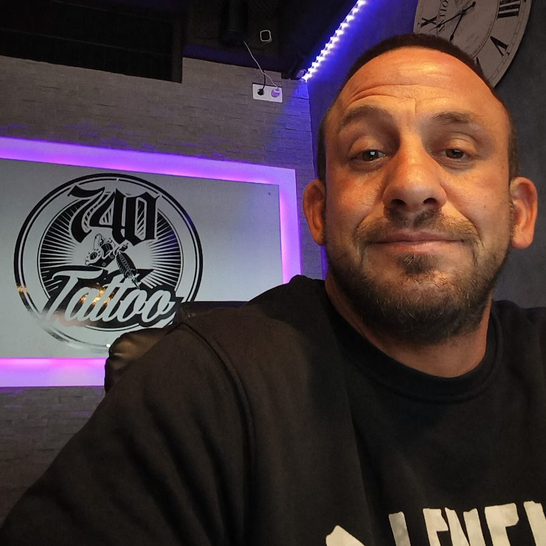

Lichtes Haar
Die Kopfhaut schimmert durch? Pigmente unter dem vorhandenen Haar nehmen den Kontrast und lassen das Haar sofort dichter wirken – auch bei längeren Haaren.
Haarpigmentierung im Emsland
ab 299 €
Dunkle Fläche kann jeder – echte Haarstruktur zu simulieren ist Handwerk. Ich pigmentiere feinste Haarpunkte in mehreren Farbtönen, damit Haarlinie und Dichte so aussehen, als wären sie nie weg gewesen.

Für wen?
Die Kopfhaut schimmert durch? Pigmente unter dem vorhandenen Haar nehmen den Kontrast und lassen das Haar sofort dichter wirken – auch bei längeren Haaren.
Eine individuell gezeichnete Haarlinie mit weichen Verläufen – passend zu Gesichtsform und Alter. Ergebnis: der gepflegte Look eines frisch rasierten Kopfes.
Mehr Dichte zwischen den Grafts und an Spenderstellen – die ideale Ergänzung zu einer Transplantation.
OP-, FUT- oder Unfallnarben werden mit passenden Farbtönen so pigmentiert, dass sie im Haarbild verschwinden.
Lichter Scheitel oder dünner werdendes Haar? Die Pigmentierung unter dem Haar sorgt dafür, dass die Kopfhaut weniger durchscheint.
Kahle Stellen oder ein lichter Bart? Feine Pigmentpunkte füllen die Lücken auf, damit der Bart gleichmäßig und dichter wirkt.
Die Methode
Ein echtes Haarbild ist nie einfarbig und nie gleichmäßig – also darf es die Pigmentierung auch nicht sein. Ich arbeite deshalb nach der 4D-Technik:
Ablauf
Wir schauen uns deine Ausgangssituation an, besprechen Wunsch-Look und Haarlinie. Unverbindlich – vor Ort oder per WhatsApp mit Fotos.
Ein kleiner Test zeigt, welche Farbtöne auf deiner Haut perfekt wirken. So gibt es später keine Überraschungen.
In der Regel 2–4 Sitzungen à ca. 1–3 Stunden. Zwischen den Terminen liegen einige Tage, damit die Haut abheilen kann.
Du bekommst klare Pflegehinweise und ich bleibe dein Ansprechpartner – auch für spätere Auffrischungen.
Ergebnisse
Keine Stockfotos – das sind meine Kunden. Mehr Arbeiten findest du auf Instagram @haarpigmentierung_emsland.
 Vorne
Vorne Seite
SeiteHaarlinie und Dichte wirken von vorne und von der Seite natürlich.



Über mich
Hi, ich bin Alessandro. Ich weiß, wie sehr Haarausfall am Selbstbewusstsein nagen kann – und wie viel ein natürliches Ergebnis verändert. Gelernt habe ich das Handwerk bei Foundation Time. Jetzt biete ich die Haarpigmentierung direkt hier in Lingen an.
Bei mir gibt es keine Massenabfertigung: Jede Haarlinie wird individuell geplant, jeder Termin hat genug Zeit.
Studio: im 740 Tattoo, Burgstraße 12, 49808 Lingen (Ems)
FAQ
Viele Kunden spüren kaum etwas – manche empfinden es sogar als angenehm, fast wie eine Massage. Je nach Stelle spürt man es etwas mehr oder weniger.
Die Pigmente sitzen sehr oberflächlich und hellen über die Jahre langsam auf. Je nach Hauttyp und Sonneneinwirkung ist nach einigen Jahren (ca. 5) eine kurze Auffrischung sinnvoll.
Nein. Statt Flächen werden feinste Punkte in mehreren Farbtönen und Formen gesetzt, die echte Haarstoppeln nachbilden. Kein Verlaufen und kein Blaustich, weil ich andere Pigmente verwende als beim Tätowieren: vegane, farbechte Pigmente, die der Körper über die Jahre langsam abbaut. Deshalb behalten sie ihren echten Farbton.
Ein paar Tage kein Sport mit starkem Schwitzen, keine Sauna, kein Schwimmen und keine direkte Sonne. In den ersten Tagen solltest du die Kopfhaut eincremen und feucht halten.
Eine Haarpigmentierung gibt es bei mir ab 299 €. Der genaue Preis hängt von der Fläche und dem gewünschten Ergebnis ab. Zur Orientierung: Eine kahle Stelle am Hinterkopf (Tonsur) liegt bei etwa 399 €, ein komplett kahler Oberkopf bei etwa 1.500 €. In der kostenlosen Erstberatung bekommst du ein festes Angebot – transparent und ohne versteckte Kosten.
Bei lichtem Haar ja – die Pigmentierung unter längerem Haar reduziert den Kontrast zur Kopfhaut. Bei Glatze sieht das Ergebnis am besten mit rasiertem oder sehr kurzem Haar aus.
Kontakt
Schreib mir am einfachsten eine Direktnachricht auf Instagram oder per WhatsApp – gern gleich mit ein paar Fotos deines Kopfes (vorne, oben, seitlich). Ich melde mich innerhalb von 24 Stunden.